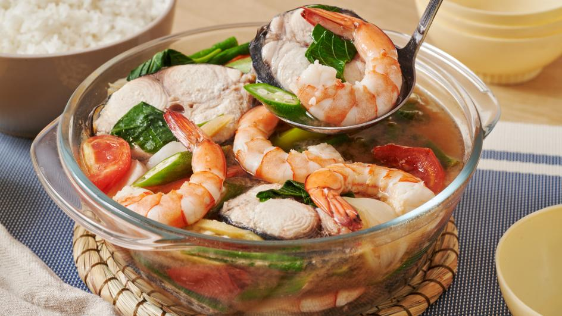

Shrimp Sinigang

Description
Shrimp sinigang is a Filipino sour soup made wwith shrimp and a variety of vegetables,
such as tomatoes, radish, eggplant, and long green beans. the dish is flavored with tamarind,
which gives it its signature tangy taste, along with other seasonings like fish sauce
and sometimes lemongrass. It's a comforting, refreshing dish typically served with rice
and is loved for its balance of sour, savory, and slightly sweet flavors.
Ingredients
- 1 lb. shrimp
- 44 grams Knorr Sinigang sa Sampaloc mix
- 1 bunch kangkong
- 15 pieces snake beans
- 5 pieces okra
- 1 piece eggplant
- 1 cup daikon radish, sliced
- 1 piece tomato, sliced
- 3 pieces long green pepper
- 1 piece onion
- 2 quarts water
- Fish sauce and ground black pepper to taste
Steps
- Boil water in a cooking pot. Add onion, tomato, and radish.
Cover and continue to boil for 8 minutes.
- Add shrimp. Cook for 1 minute.
- Add Knorr Sinigang sa Sampaloc Recipe Mix. Stir until it
dilutes completely. Cover and cook for 3 minutes.
- Add long green pepper, snake beans, okra, and eggplant. Stir.
Cook for 5 minutes.
- Put the kangkong stalks into the pot. Season with fish salt
and ground black pepper.
- Add kangkong leaves. Cook for 1 minute.
- Transfer to a serving bowl. Serve warm with rice